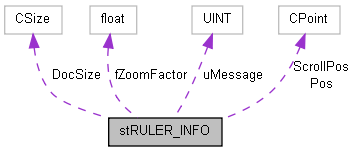

MirageDumper(staticlibsamplerate)
1
Public Attributes
stRULER_INFO Struct Reference
Collaboration diagram for stRULER_INFO:

[
legend
]
List of all members.
Public Attributes
UINT
uMessage
CPoint
ScrollPos
CPoint
Pos
CSize
DocSize
float
fZoomFactor
Detailed Description
Definition at line
26
of file
ruler.h
.
stRULER_INFO
Generated on Wed Mar 2 2011 11:34:34 for MirageDumper(staticlibsamplerate) by
1.7.3 using KingsTools
 1.7.3 using KingsTools
1.7.3 using KingsTools
1.7.3 using KingsTools
1.7.3 using KingsTools